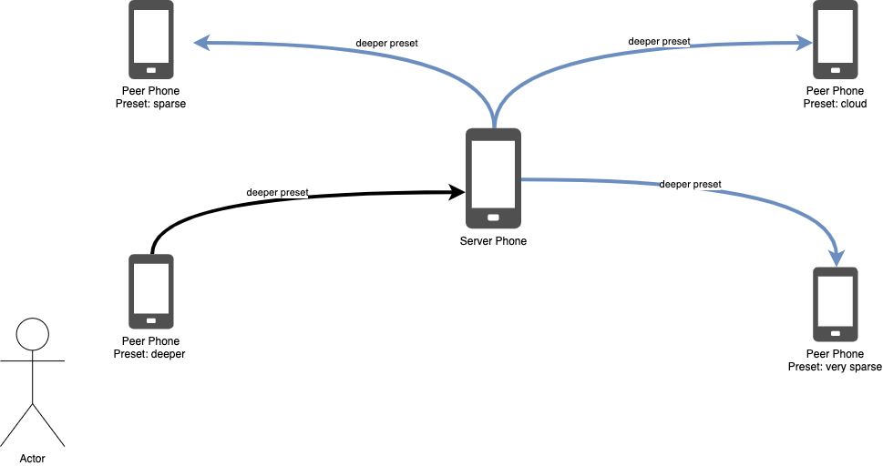

immaterial.cloud
Using peer-to-peer technologies for music
Tate Carson
immaterial.cloud is an immersive audiovisual installation that explores a possible networked future of
peer-to-peer technologies, away from cloud computing. Participants experience the work via two to four
smartphones placed in different locations in a room. As participants walk up to a phone, they see a representation
of themselves through data. If the participant gets close enough, the phone triggers a change in the sound of
immaterial.cloud and the other phones follow.

 The idea for immaterial.cloud emerged to create a communal experience during the COVID-19 shelter-in-place
orders during which many people have turned to the internet for communication and entertainment. While social
networks such as Facebook or Google seek our attention for profit, immaterial.cloud seeks a deep attention that
creates a shared sense of place and time for the participants.
The idea for immaterial.cloud emerged to create a communal experience during the COVID-19 shelter-in-place
orders during which many people have turned to the internet for communication and entertainment. While social
networks such as Facebook or Google seek our attention for profit, immaterial.cloud seeks a deep attention that
creates a shared sense of place and time for the participants.
 immaterial.cloud is a web application that uses peer-to-peer technologies to send data between phones without the
need for an intermediary server similar to the decentralized or distributed part of this rand corp diagram.
immaterial.cloud creates the chance for a shared space with participants by using technology collectively. It
requires the phones to act together, not as individuals as is usual in this era of personalized devices.
Experiencing
immaterial.cloud presents an opportunity for a restoration of attention fatigued by an overuse of technology.
immaterial.cloud is a web application that uses peer-to-peer technologies to send data between phones without the
need for an intermediary server similar to the decentralized or distributed part of this rand corp diagram.
immaterial.cloud creates the chance for a shared space with participants by using technology collectively. It
requires the phones to act together, not as individuals as is usual in this era of personalized devices.
Experiencing
immaterial.cloud presents an opportunity for a restoration of attention fatigued by an overuse of technology.
Attention Economy
Sarah Hartman-Caverly. Human nature is not a machine: On liberty, attention engineering, and learning analytics.
Library Trends, 68(1):24–53, 2019.
Josef Falkinger. Attention economies. Journal of Economic Theory, 133(1):266–294, 2007.
T. Wu. The Attention Merchants: The Epic Scramble to Get Inside Our Heads. Vintage Books, 2017.
N Katherine Hayles. Hyper and deep attention: The generational divide in cognitive modes. Profession, pages
187–199, 2007.
Why peer-to-peer? Because of the attention economy, which turns our attention into an economic good by measuring
it through clicks, downloads, and likes. Measurement allows companies to sell our attention as data to
advertisers.
 An example of the attention economy would be Google Search. Here's a
recent search where Google predicted search results based on my browsing history on Google Books then
automatically made available to Google Search, allowing the prediction to happen. The perniciousness of this is
that this prediction is a useful tool, and most users won’t take the time to stop and analyze how it works. They
will just enjoy the ease of use that data sharing has given them, without thinking about the consequences in loss
of privacy.
An example of the attention economy would be Google Search. Here's a
recent search where Google predicted search results based on my browsing history on Google Books then
automatically made available to Google Search, allowing the prediction to happen. The perniciousness of this is
that this prediction is a useful tool, and most users won’t take the time to stop and analyze how it works. They
will just enjoy the ease of use that data sharing has given them, without thinking about the consequences in loss
of privacy.
Alternatives?
J. Odell. How to Do Nothing: Resisting the Attention Economy. Melville House, Brooklyn, London, 2019.
How can the attention economy be resisted? We must re- design the technologies that encourage a capitalist percep-
tion of time, place, self, and community. Deepening one’s concept of place will extend an awareness of history and
cur- rent connection to everything around them. Odell suggests that “doing nothing” moves our attention from
economic concerns to the physical, place based domain [18]. Doing nothing, or sitting out the attention economy is
an active proposition and “entails an active process of listening that seeks out the effects of racial,
environmental, and economic injustice and brings about real change [18].”
Because of these platforms’ flaws we shouldn’t be using them to distribute and make our art. These platforms re-
ward a way of being that isn’t beneficial to society. They resist the concept of interconnection, by emphasizing
our differences and not allowing us to show fuller versions of ourselves. We must “stand apart” as Odell
suggests, and create new systems for communication on the internet. Distribued peer-to-peer systems can be a part
of this.
Background
Peer-to-peer systems aren’t new but had their heyday in the public imagination during the height of online file
sharing when Napster was operating between 1999 and 2001.
Early p2p music projects
- Tanaka mobile music system with PDAs
A. Tanaka. Mobile music making. In Proceedings of the 2004 conference on New interfaces for musical
expression, pages 154–156, 2004.
-
Lee, Essl, and Mao - MANET
S. W. Lee, G. Essl, and Z. M. Mao. Distributing Mobile Music Applications for Audience Participation Using
Mobile Ad-hoc Network (MANET). In NIME, pages 533–536, 2014.
Because of the popularity and common knowledge of
those systems, interactive music works began to emerge that used and extended similar technologies. In 2004 Atau
Tanaka
created a collaborative music-making system based on personal digital assistants (PDAs), which extend the simple
sharing of music on peer-to-peer systems allowing users who were near each other to interact through Service
Discovery Protocol (SDP). Lee, Essl, and Mao have used SDP effectively to distribute applications to mobile
phones in a mobile ad hoc network (MANET).
WebRTC systems
- Soundtrap
F. Lind and A. MacPherson. Soundtrap: A collaborative music studio with Web Audio. London, UK,
2017.
- GroupLoop
D. B. Ramsay and J. A. Paradiso. Grouploop: A collaborative, network-enabled audio feedback instrument. In New
Interfaces for Musical Expression, pages 251–254, Baton Rouge, Louisiana, 2015.
- Hear-Here
A. Black. Hear-Here: A choreographed peer-to-peer network for live participation on the radio. In Proceedings
of the 12th International Audio Mostly Conference on Augmented and Participatory Sound and Music Experiences,
pages 1–6, London, UK, 2017.
- Fun With Chords
L. Xing, M. Ulrich, and O. Diab. Fun With Chords–A Distributed Music Player.
Several web audio projects have used WebRTC. Lind’s Soundtrap uses WebRTC’s video channel. Ramsay and
Paradiso’s Grouploop uses the audio channel to send audio between clients to create a feedback based performance
system, and Black’s Hear-Here uses it to coordinate an FM radio broadcast out of the audio of
distributed clients. Xing, Ulrich and Diab’s Fun With Chords, a distributed music player, uses the data
channel. Authors gave few reasons for choosing WebRTC over other methods in the cited papers, but one can assume
they chose WebRTC for the reasons same that interest me—the minimal need for servers.
How does immaterial.cloud use WebRTC?
immaterial.cloud is networked using WebRTC (Web Real-Time Communication), which allows for websites to stream
audio, video, or data between each other without an intermediary.
immaterial.cloud uses the data channel capability of WebRTC, defined by the RTCDataChannel interface. This
interface allows for bidirectional transfer of peer-to-peer data. The work uses the PeerJS library to
simplify the process of setting up connections and dealing with messaging. PeerJS provides an API like Socket.io
to send and receive messages with few lines of code. PeerJS also includes a signaling server which allows a
programmer to use the library without having to set up and run a server. Though immaterial.cloud uses video as
it’s main mode of user interaction, the RTCPeerConnection API isn’t used because video isn’t streamed between
devices.
immaterial.cloud needs two to four smartphones (iPhone or Android) connected to the internet via WiFi or a
cellular network. All sound during the installation is played through the phones via a web browser.
immaterial.cloud will work with a group of participants or just one. A user interacts with immaterial.cloud
through motion, waving a hand or walking up to a phone. The camera of the phone tracks any change
in motion, triggers an update to the sound playing, and updates all other phones.
 A participant joins the network by going to https:// immaterial.cloud and entering the ID of a chosen “host”
phone. Though the “host” phone doesn’t need to enter any ID to play, the participant still needs to press join to
start the sound. It’s necessary to use IDs so immaterial.cloud knows which phones to send
messages to (without participants having to sign up for accounts).
A participant joins the network by going to https:// immaterial.cloud and entering the ID of a chosen “host”
phone. Though the “host” phone doesn’t need to enter any ID to play, the participant still needs to press join to
start the sound. It’s necessary to use IDs so immaterial.cloud knows which phones to send
messages to (without participants having to sign up for accounts).
A typical interaction might go as follows. A user waves their hand over a phone, which is assigned a preset of
“deeper,” then the preset is sent to each of the other phones, first traveling through the server phone to change
its preset to “deeper”.

This diagram shows how data flows from the triggered phone to the server phone,
then out to the other peer phones, setting the other phones sound to the chosen preset. The user doesn’t have fine
grained control over how the sounds develope but can explore the different
presets by triggering each phone.
Each preset uses one of four granulated samples, a ring tone, a double bass improvisation, a music box, or tubular
bells. The presets control the pitch, attack, release, and density for each grain of the granular synthesis.
When a player triggers a new preset, the system interpolates between the previous preset and the new preset over a
randomly chosen length of time. This combination of presets and interpolation provides different sound
possibilities without too much chaotic variation.
Future Work
Peer-to-peer technologies provide a pathway to a form of networked communication that doesn’t rely on the
attention economy. immaterial.cloud is an early step in the movement towards peer-to-peer networked art.
While immaterial.cloud uses WebRTC, I think it is important to outline possible future protocols. Many
technologies are currently in development that seek to invert the current
client/server architecture of the web. These systems share a vision for a decentralized internet. Some popular
protocols include Interplanitary File System (IPFS), Secure Scuttlebutt, Hypercore Protocol, and Matrix.
These protocols vary in design and goals. One could imagine a composer choosing a specific protocol as a
compositional choice that would make for more interesting modes of interaction for our networked web audio
creations of the future.
References